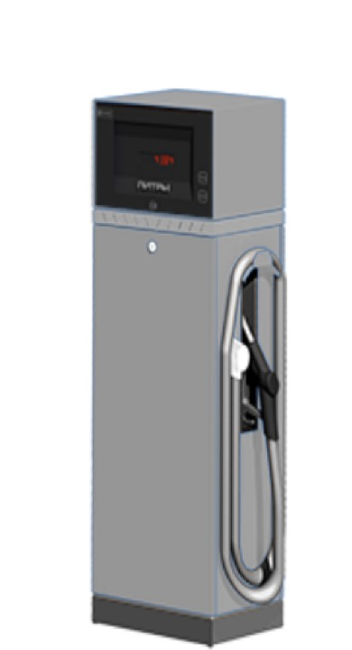

ТРК ТОПАЗ 510 напорная
Артикул: 0749
Топаз-сервис (Волгодонск)
Раздел: Напорные ТРК · АЗС
| Количество видов топлива | 1 |
| Количество рукавов | 1 |
| Количество сторон индикации | 1 |
| Скорость выдачи топлива | 50 |
| Тип гидравлики | Напорная |
| Тип индикации | СДИ |
Цена и наличие — по запросу. Поставляем оригинал и аналоги. Доставка по России.
Модификации и размеры (8)
- ТРК ТОПАЗ 510 напорная · арт. 0749
- ТРК ТОПАЗ 210 напорная · арт. 0751
- ТРК ТОПАЗ 220 напорная · арт. 0752
- ТРК ТОПАЗ 230 напорная · арт. 0757
- ТРК ТОПАЗ 420 напорная · арт. 0759
- ТРК ТОПАЗ 240 напорная · арт. 0761
- ТРК ТОПАЗ 110 напорная · арт. 0764
- ТРК ТОПАЗ 610 напорная · арт. 0765
Подберём нужный вариант — уточните при запросе.
Описание
ТРК ТОПАЗ 510 напорная производства Топаз-сервис (Волгодонск) — позиция из раздела «Напорные ТРК» для АЗС. Компания SYNDICAT поставляет оборудование и комплектующие для автозаправочных и газозаправочных станций по всей России. Цена и наличие «ТРК ТОПАЗ 510 напорная» — по запросу: оставьте заявку или позвоните, подберём оригинал или аналог и рассчитаем доставку.